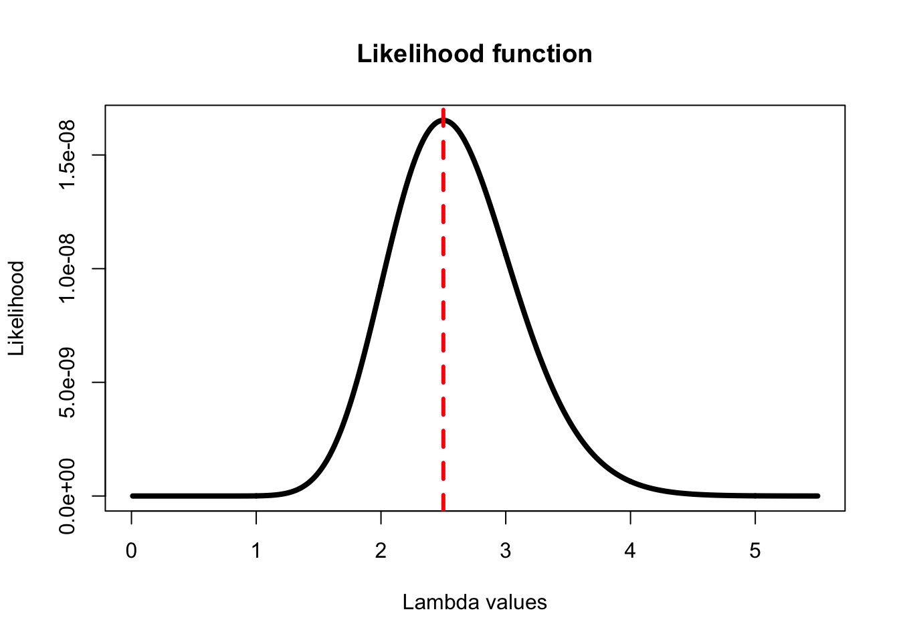
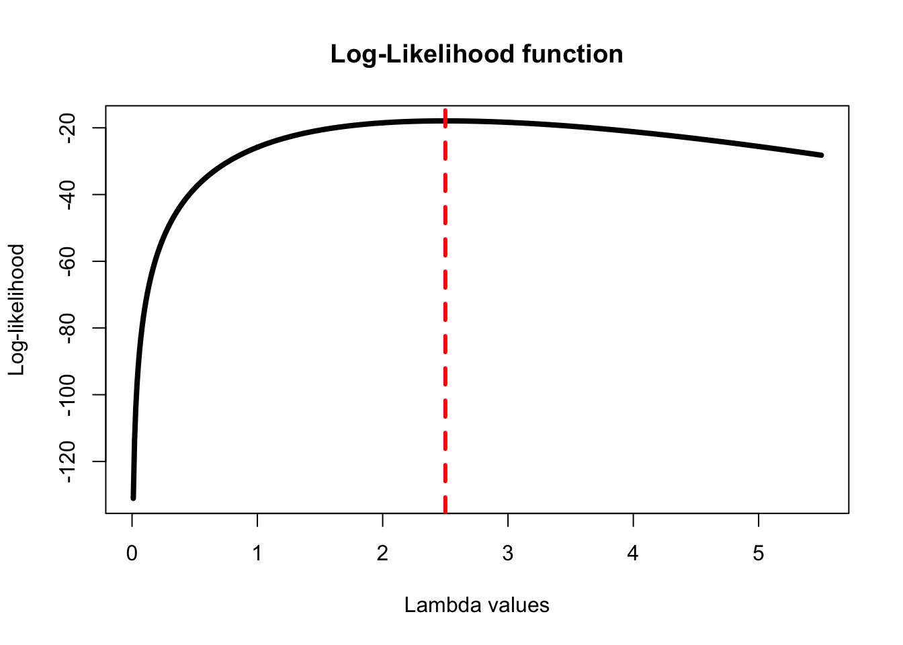

Denote with \(p(x|\theta)\), the PMF(probability mass function) of each \(X_i\), \(L(\theta)=\displaystyle\prod_{i=1}^{n}p(x_i|\theta)\)
\(l(\theta)=\displaystyle\sum_{i=1}^{n}logp(x_i|\theta)\)
\(L(\pi)={n\choose k}\pi^y(1-\pi)^{n-y}\), y=0,1,…,n
Written with R function
llfun <- function(pi,n,observation){
choose(n,observation)*(pi^observation)*(1-pi)^(n-observation)
}\(l(\pi)=ln{n\choose k}+yln\pi+(n-y)ln(1-\pi)\), y=0,1,…,n
Written with R function
loglik <- function(pi,n,observation){
log(choose(n,observation))+(observation*log(pi))+(n-observation)*log(1-pi)
}
The demonstrates the value of \(\pi\) that maximizes the log-likelihood is \(\frac{y}{n}\)
OZQ Hospital is interested in determining its rate of deliveries between the hours of midnight and 8 am.They randomly select 10 nights from last year and observe the following number of deliveries per each night:3, 3, 2, 4, 3, 1, 0, 3, 5, 1. The hospital knows that the distribution for the number of deliveries between thehours of midnight and 8 a.m. is a Poisson distribution. They want to find the maximum likelhood estimate of \(\lambda\) , the rate of deliveries per each midnight to 8 am shift.
Using \(L(\theta)=\displaystyle\prod_{i=1}^{n}p(x_i|\theta)\), and \(p(x_i|\lambda)=\displaystyle\prod_{i=1}^{n}\frac{\lambda^{x_i}e^{-\lambda}}{x_i!}\) to plot a likelihood function
likelihood <-function(lambda, x) {
pdf_xi =vector(length =length(x))
for(i in 1:length(x)){
pdf_xi[i] = ((lambda^x[i])*(exp(-lambda)))/factorial(x[i])
}
prod(pdf_xi)
}
x =c(3, 3, 2, 4, 3, 1, 0, 3, 5, 1)
lambdas <-seq(0.01, 5.5, by=0.01)
likelihoods <-sapply(lambdas,likelihood,x = x)
plot(lambdas, likelihoods, type = "l", lwd=4,
xlab = "Lambda values",
ylab = "Likelihood",
main ="Likelihood function")
abline(v = lambdas[which(likelihoods== max(likelihoods))],
col="red", lwd=3, lty=2)
Using \(l(\theta)=\displaystyle\sum_{i=1}^{n}logp(x_i|\theta)=log(L(\theta))\), to plot a log-likelihood function
log_likelihood <-function(lambda, x) {
log(likelihood(lambda, x))
}
#Using x and lambdas defined above
log_likelihoods <-sapply(lambdas,log_likelihood,x = x)
plot(lambdas, log_likelihoods, type = "l", lwd=4,
xlab = "Lambda values", ylab = "Log-likelihood",
main ="Log-Likelihood function")
abline(v = lambdas[which(likelihoods== max(likelihoods))], col="red", lwd=3, lty=2)